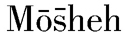

二弟览：Karásek[238]的《斯拉夫文学史》，将窠罗泼泥子街[239]收入诗人中，竟于小说全不提起，现在直译寄上，可修改酌用之，末尾说到“物语”，大约便包括小说在内者乎？这所谓“物语”，原是Erzählǔng，不能译作小说，其意思只是“说话”“说说谈谈”，我想译作“叙述”，或“叙事”，似较好也。精神（Geist）似可译作“人物”。
《时事新报》有某君（忘其名）一文[240]，大骂自然主义而欣幸中国已有象征主义作品之发生。然而他之所谓象征作品者，曰冰心女士的《超人》，《月光》[241]，叶圣陶的《低能儿》[242]，许地山的《命命鸟》[243]之类，这真教人不知所云，痛杀我辈者也。我本也想抗议，既而思之则“何必”，所以大约作罢耳。
大学编译处由我以信并印花送去，而彼但批云“不代转”云云，并不开封，看我如何的说，殊为不届[244]。我想直接寄究不妥。不妨暂时阁起，待后再说，因为以前之印花税亦未取，何必为“商贾”忙碌乎。然而“商贾”追索，大约仍向该处，该处倘再有信来，则我当大骂之耳。
我想汪公[245]之诗，汝可略一动笔，由我寄还，以了一件事。
由世界语译之波兰小说四篇[246]，是否我收全而看过，便寄雁冰乎？信并什曼斯キ小说[247]已收到，与德文本略一校，则三种互有增损，而德译与世界语译相同之处较多，则某姑娘之不甚可靠确矣。德译者S.Lopuszánski，名字如此难拼，为作者之同乡无疑，其对于原语必不至于误解也。惜该书无序，所以关于作者之事，只在《斯拉夫文学史》中有五六行，稍缓译寄。来信有做体操之说，而我当时未闻，故以电话问之，得长井答云：先生[248]未言做伸伸开之体操，只须每日早昼晚散步三次（我想昼太热，两次也好了），而散步之程度，逐渐加深，而以不ツカレル[249]为度。又每日早晨，须行深呼吸，不限次数，以不ツカレル为度，此很要紧。至于对面有疑似肺病之人，则于此间无妨，但若神经ノセイ[250]，觉得可厌，则不近其窗下可也（此节我并不问，系彼自言）云云。汝之所谓体操，未知是否即长井之所谓深呼吸耶，写出备考。
树上 十三夜
Dr. Josef Karásek：《Slavische Literaturgeschichte》，II Teil，§ 16.[251]《最新的波兰的诗》（Asnyk，Konopnicka.）[252]Mária Konopnicka（1846）在许多的点上（多クノ点ニ於イテ），是哲学的，对于クラシク[253]典雅世界有着特爱的一个确实的男性的精神（Geist），略与Asnyk相同。后一事伊识之于伊大利和希腊，而于古式（Antik形式）中赋以生命，伊又如Asnyk，是一个缜密的体式和响亮的言辞的好手（Meisterin），此外则倘伊高呼“祖国”以及到了雄辩的语调的时候，其奋发也近于波希米亚的女诗人Krásnohorská[254]。Konopnicka是“女人的苦楚和哀愁”的诗人，计其功绩，是在“用了民族的神祠（Nationale Pantheon）——饶富其民众”。伊以叙述移住民生活的，尚未完成的叙事诗（Epopöe）《在巴西之Balzar氏》[255]，引起颇大的惊异来。伊又于运用历史的大人物如Moses，Hus，Galileo[256]等时，证明其宽博活泼的境地。形成伊“诗的认识”的高点者，为“断片”中的“Credo”[257]。在伊的国人的区别上，则Konopnicka于斯拉夫世界最有兴趣，而尤在Ceche，Kroate，Slovene[258]，并且喜欢译那些的诗歌（特于Vrchlicky——伊虽然也选译过Hamerling，Heyse和Ackermann[259]的集）；至于物语，则伊在Görz[260]的旅行记载中，是特抱了对于南斯拉夫的特爱而作的。但Konopnicka也识得诺尔曼的海岸[261]，诗人之外又为动人的物语家，也做文学的论说和Essay[262]，虽然多为主观的，却思索记述得都奇特。伊的文学的祝典，不独在波兰，却在波希米亚也行庆祝，那里是Konopnicka的诗歌，已由翻译而分明入籍的了。
注 释
[238] Karásek 约瑟夫·凯拉绥克（1871—1951），捷克作家。著有诗集《死的对话》、《流放者之岛》和《斯拉夫文学史》等。
[239] 窠罗泼泥子街 通译科诺普尼茨卡（M.Konopnicka，1842—1910），波兰女作家。著有长诗《巴尔采尔先生在巴西》，短篇小说《我的姑妈》等。
[240] 指洪瑞钊所作《中国新兴的象征主义文学》，刊于1921年7月9日上海《时事新报·学灯》。
[241] 冰心（1900—1999） 谢婉莹，笔名冰心，福建长乐人，女作家，文学研究会成员。《超人》，短篇小说，载《小说月报》第十二卷第四号（1921年4月）。《月光》，短篇小说，载1921年4月19日至20日《晨报》副刊。
[242] 叶圣陶（1894—1988） 名绍钧，江苏吴县人，作家。文学研究会发起人之一。《低能儿》，短篇小说，载《小说月报》第十二卷第二号（1921年2月）。
[243] 许地山（1893—1941） 名赞堃，笔名落华生，台湾省人，作家，文学研究会发起人之一。《命命鸟》，短篇小说，载《小说月报》第十二卷第一号（1921年1月）。
[244] 不届 日语，此处是不周到、不讲理的意思。
[245] 汪公 指汪静之（1902—1996），安徽绩溪人，诗人。1921年夏，他在浙江第一师范学校学习时，曾将诗稿《蕙的风》寄周作人求教。
[246] 波兰小说四篇 指周作人从波兰巴音的世界语《波兰文选》中译出的四篇小说：戈木列支奇的《燕子与蝴蝶》和普鲁斯的《影》，均刊于《小说月报》第十二卷第八号（1921年8月）。显克微支的《二草原》和科诺普尼茨卡的《我的姑母》，分别刊于《小说月报》第十二卷第九号（1921年9月）、第十号（1921年10月）。
[247] 什曼斯キ小说 指波兰作家什曼斯基（Adam Szymański）的《犹太人》。由周建人从英国班纳克（E.C.M.Benecko，即下文说的“某姑娘”）所译《波兰小说集》中转译，经周作人据世界语《波兰文选》校对，又由鲁迅据洛普商斯奇（即下文的S.Lopuszánski）德译本校订，刊于《小说月报》第十二卷第九号（1921年9月）。
[248] 长井 应为永井，当时山本医院的护士。先生，指山本忠孝。
[249] ツカレル 日语：疲劳。
[250] 神经ノセイ 日语：心理作用。
[251] 德语：约瑟夫·凯拉绥克博士《斯拉夫文学史》第二卷第十六节。
[252] Asnyk 亚斯尼克（Adam Asnyk，1838—1897），波兰诗人。Konopnicka，即科诺普尼茨卡。
[253] クラシク 日语：古典。
[254] Krásnohorská 克拉斯诺霍尔斯卡，捷克女诗人。波希米亚，捷克斯洛伐克西部地区的旧称。
[255] 《在巴西之Balzar氏》 即《巴尔采尔先生在巴西》。
[256] Moses 摩西（

），《圣经》故事中古代犹太人的领袖，犹太教的创始人。Hus，胡斯（1369—1415），捷克爱国主义者和宗教改革家。Galileo，伽利略（1564—1642），意大利物理学家、天文学家。[257] Gredo 信条。
[258] Ceche 捷克。Kroate，克罗地。Slovene，斯洛文尼。
[259] Vrchlicky 符尔列支奇（1853—1912），捷克作家。Hamer-ling，哈美林（1830—1889），奥地利作家。Heyse，海塞（1830—1914），德国作家。Ackermann，阿克曼（1813—1890），法国女诗人。
[260] Görz 该尔兹，意大利城市。
[261] 诺尔曼的海岸 即法国西北部的诺曼底海岸。
[262] Essay 英语：随笔，小品。